Lokesh Mano • 19-Oct-2022
Now that we have covered the important aspects of ggplot, meaning getting the actual plot you wanted, let us now look into secondary elements of the plot.
1 Modifying Axes
1.1 Breaks
If we look at the iris data plot that we made before:
ggplot(data=iris,mapping=aes(x=Petal.Length,y=Petal.Width))+
geom_point(aes(color=Sepal.Width))+
geom_smooth(method="lm")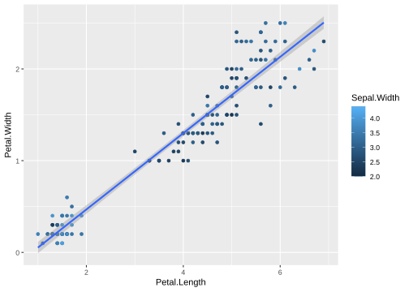
The continuous x axis breaks are with 2,4,6 and so on. If we would like to have 1,2,3… We change this using scale_x_continuous() and breaks.
ggplot(data=iris,mapping=aes(x=Petal.Length,y=Petal.Width))+
geom_point(aes(size=Sepal.Width, color=Species))+
geom_smooth(method="lm") +
scale_x_continuous(breaks = 1:7)plot
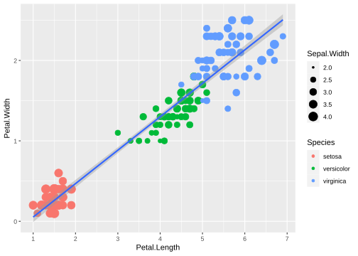
You can do the same with y-axis.
ggplot(data=iris,mapping=aes(x=Petal.Length,y=Petal.Width))+
geom_point(aes(size=Sepal.Width, color=Species))+
geom_smooth(method="lm") +
scale_x_continuous(breaks = 1:7) +
scale_y_continuous(breaks = seq(0,3,0.5))plot
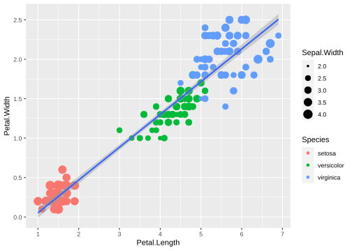
1.2 Limits
By using limits, we can also decide on the parts to plot to be shown:
ggplot(data=iris,mapping=aes(x=Petal.Length,y=Petal.Width))+
geom_point(aes(size=Sepal.Width, color=Species)) +
geom_smooth(method="lm") +
scale_x_continuous(limits=c(3, 7))plot
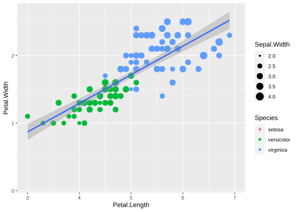
We can do the same with discrete x values like in the case of our gene counts dataset.
gc_long %>%
group_by(Time, Replicate) %>%
summarise(mean=mean(log10(count +1)),se=se(log10(count +1))) %>%
ggplot(aes(x=Time, y=mean, fill = Replicate)) +
geom_col() +
scale_x_discrete(limits=c("t0","t24"))plot
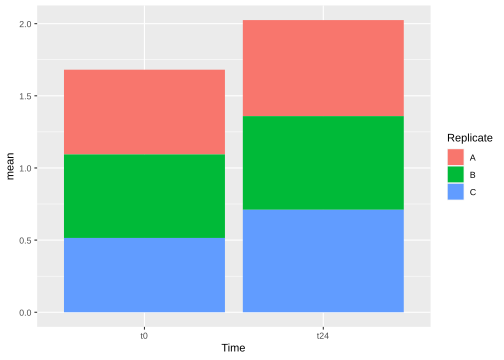
One can also use xlim() and ylim() functions that function the same as limits with scale_x_continous() or scale_x_discrete()
1.3 Names
You can also customize the axis labels using the name option within scale_x_continous and scale_y_continous.
ggplot(data=iris,mapping=aes(x=Petal.Length,y=Petal.Width))+
geom_point(aes(size=Sepal.Width, color=Species))+
geom_smooth(method="lm") +
scale_x_continuous(name = "Length", breaks = 1:7) +
scale_y_continuous(name = "Width", breaks = seq(0,3,0.5))plot
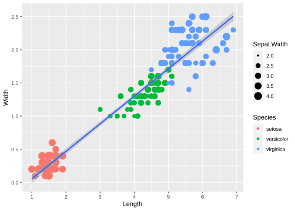
with labels in combination with the scales package, one can change or make the unit of the axis look more comprehensible, when needed. Like using percentage option or scientific option.
library(scales)
ggplot(data=iris,mapping=aes(x=Petal.Length,y=Petal.Width))+
geom_point(aes(size=Sepal.Width, color=Species))+
geom_smooth(method="lm") +
scale_y_continuous(name = "Width", breaks = seq(0,3,0.5), labels = scientific)plot
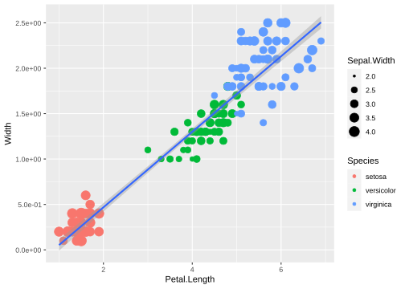
2 Legends
There are many ways to control the legends, below are some of the examples:
First by using guides() function.
ggplot(data=iris,mapping=aes(x=Petal.Length,y=Petal.Width))+
geom_point(aes(color=Species,size=Sepal.Width))+
guides(size="none")plot

We can also turn off legends by geom.
ggplot(data=iris,mapping=aes(x=Petal.Length,y=Petal.Width))+
geom_point(aes(color=Species,size=Sepal.Width),show.legend=FALSE)plot
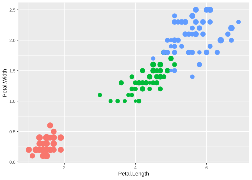
2.1 Editing legends
The legends can be edited by scale_<aesthetic>_<discrete or continous> function that we have been using. Take the below figure for example, we have the Sepal.Width and the Species with the size and color aestheitcs respectively.
ggplot(data=iris,mapping=aes(x=Petal.Length,y=Petal.Width))+
geom_point(aes(size=Sepal.Width, color=Species))+
geom_smooth(method="lm")Let’s try to edit the legends here like mentioned before:
ggplot(data=iris,mapping=aes(x=Petal.Length,y=Petal.Width))+
geom_point(aes(size=Sepal.Width, color=Species))+
geom_smooth(method="lm") +
scale_size_continuous(name = "Width of Sepal") +
scale_color_discrete(name = "Organism", labels = c("Iris setosa", "Iris versicolor", "Iris virginica"))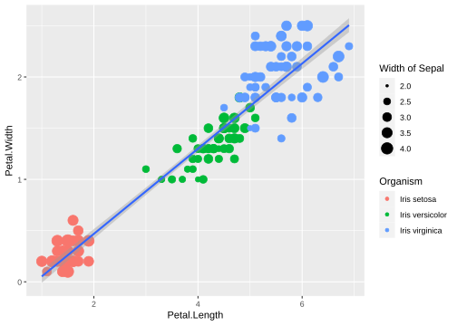
2.2 Moving legends
Legends can be moved around using theme.
ggplot(data=iris,mapping=aes(x=Petal.Length,y=Petal.Width))+
geom_point(aes(color=Species,size=Sepal.Width)) +
theme(legend.position="top",
legend.justification="right")plot
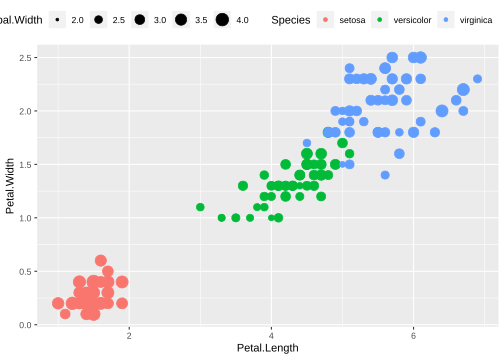
Legend rows can be controlled in a finer manner.
ggplot(data=iris,mapping=aes(x=Petal.Length,y=Petal.Width))+
geom_point(aes(color=Species,size=Sepal.Width))+
guides(size=guide_legend(nrow=2,byrow=TRUE),
color=guide_legend(nrow=3,byrow=T))+
theme(legend.position="top",
legend.justification="right")plot
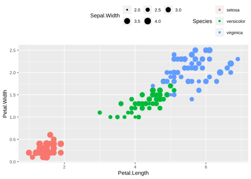
3 Themes
Now that we started into theme(), it is possible to much more editing of the plot with this function. Let us look into some of the parameters that would be very helpful to work with.
3.1 Axis style
You can change the style of the axis texts in the following way:
ggplot(data=iris,mapping=aes(x=Petal.Length,y=Petal.Width)) +
geom_point(aes(color=Species,size=Sepal.Width)) +
scale_x_continuous(name = "Length", breaks = 1:7) +
scale_y_continuous(name = "Width", breaks = seq(0,3,0.5)) +
theme(axis.text.x = element_text(face="bold", color="#993333", size=14, angle=45),
axis.text.y = element_text(face="bold", color="#993333", size=14, angle=45))plot
It is also possible hide the ticks.
ggplot(data=iris,mapping=aes(x=Petal.Length,y=Petal.Width)) +
geom_point(aes(color=Species,size=Sepal.Width)) +
scale_x_continuous(name = "Length", breaks = 1:7) +
scale_y_continuous(name = "Width", breaks = seq(0,3,0.5)) +
theme(axis.text.x = element_text(face="bold", color="#993333", size=14, angle=45),
axis.text.y = element_text(face="bold", color="#993333", size=14, angle=45),
axis.ticks = element_blank())plot
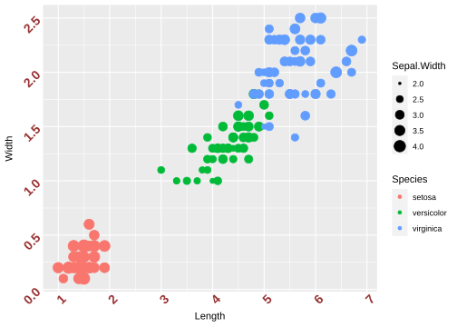
There are many things one can use to style the axis and/or axis labels. Just use ?theme() to look for all the different one can use to stylize the plots.
3.2 Different themes
Let’s consider the plot below and save it as an object P for the sake of simplicity.
P <- gc_long %>%
group_by(Time, Replicate) %>%
summarise(mean=mean(log10(count +1)),se=se(log10(count +1))) %>%
ggplot(aes(x= Time, y= mean, fill = Replicate)) +
geom_col(position = position_dodge2()) +
geom_errorbar(aes(ymin=mean-se, ymax=mean+se), position = position_dodge2(.9, padding = .6)) +
theme(axis.ticks = element_blank())
Pplot
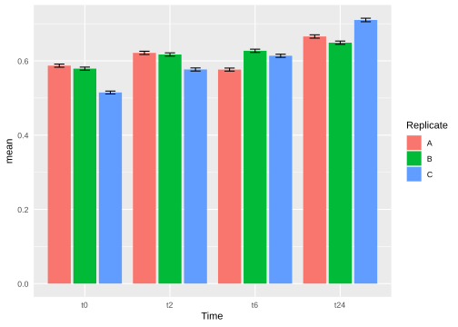
3.2.1 Lighter themes
theme_light(), theme_minimal(), theme_classic() and theme_bw() are a couple of themes that are used very often in publications.
P + theme_bw(base_size = 16)plot
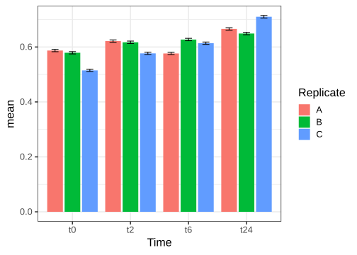
P + theme_minimal(base_size = 16)plot
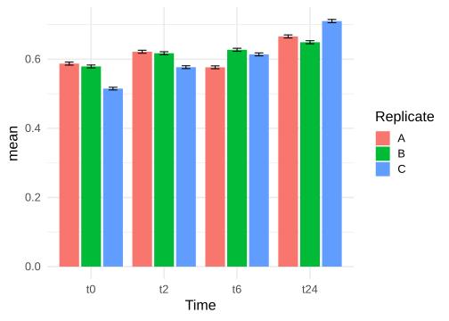
3.2.2 ggthemes package
Let’s look into some of the fancier themes that comes in this package
Q <- ggplot(data = gc_long, mapping = aes(x = Sample_Name, y = log10(count + 1), fill = Time)) + geom_boxplot()
Q plot

Using the theme_tufte()
library(ggthemes)
Q + theme_tufte()plot

Q + theme_economist() +
scale_color_economist()plot

Q + theme_stata() +
scale_color_stata()plot

4 Exercise I
Task Try to replicate the plot below if you have enough time.
plot
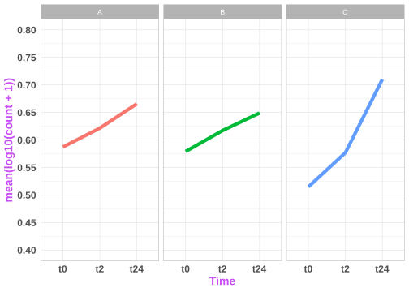
Tip: 1 geom_line() is a bit tricky when you use it together with groups. It tries to draw lines within the group. In this case, if you would like to draw lines between the groups (like in the above plot, between t0 through t2 to t24), you initate the ggplot with aesthetics for the line and add geom_line(aes(group=1)) this way.
Tip: 2 This figure has theme_light()
5 Cowplot
In this chapter, we will mainly focus on making a “publication-type” figure, with sub-plots and such using different tools in R. There are many different ways/packages to do this, but we will mainly focus on 2 packages: cowplot and ggpubr.
Now let us consider some of the plots we have made so far in the previous exercises. From the picture below, A and B are the figures that was made from the gene counts dataset and the figures C and D are using the Sepal.Length and Sepal.Width from the iris data. Now let us look into how we can combine each of the figures like it is shown here.

Now, let us go step by step. First let us make these plots into R objects. This will make things a lot easier.
p1 <- gc_long %>%
group_by(Time, Replicate) %>%
summarise(mean=mean(log10(count +1)),se=se(log10(count +1))) %>%
ggplot(aes(x= Time, y= mean, fill = Replicate)) +
geom_col(position = position_dodge2()) +
geom_errorbar(aes(ymin=mean-se, ymax=mean+se), position = position_dodge2(.9, padding = .6)) +
ylab("mean(log10(count+1))") +
theme(axis.ticks = element_blank()) +
theme_bw(base_size = 10)
p2 <- ggplot(data = gc_long) +
geom_boxplot(mapping = aes(x = Sample_Name, y = log10(count + 1), fill = Replicate)) +
facet_grid(~Time , scales = "free", space = "free") +
xlab("Time") +
theme_bw(base_size = 10) +
theme(axis.ticks.x = element_blank(), axis.text.x = element_blank())
p3 <- ggplot(data=iris,mapping=aes(x=Sepal.Length))+
geom_density(aes(fill = Species), alpha = 0.6) +
theme_light(base_size = 10)
p4 <- ggplot(data=iris,mapping=aes(x=Sepal.Length, y = Sepal.Width, color = Species)) +
geom_point(size = 3, alpha = 0.6) +
theme_light(base_size = 10)The objects p1, p2, p3 and p4 as intuitively represent the plots A, B, C and D repectively.
5.1 plot_grid
One can use the simple plot_grid() function from the cowplot.
library(cowplot)
plot_grid(p1, p2)plot

You can also do some simple customizations using nrow or ncol to specify the number of rows and columns and provide labels to those plots as well.
plot_grid(p1, p2, nrow = 2, labels = c("A", "B"))plot

5.2 ggdraw and draw_plot
In cowplot, you can also customize the dimentions of the plots in a much more controlled fashion. For this one starts with ggdraw() which initiates the drawing “canvas” followed by draw_plot() that you use to draw the different plots on to the canvas.
Here is how the dimentions of the empty canvas looks like: 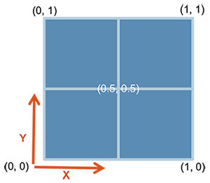
From here, you can draw your plots in the way you want using these dimensions. AN example is shown below, where we plot C and D similar to the plot above:
ggdraw() +
draw_plot(p3, x = 0, y = 0, width = 1, height = .5) +
draw_plot(p4, x = 0, y = .5, width = 1, height = .5) plot
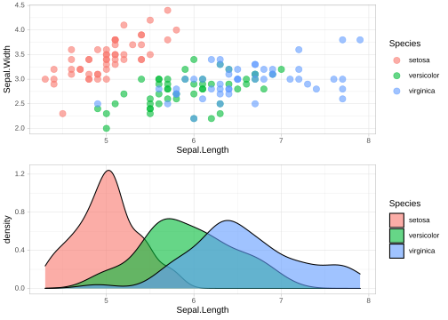
You can also add “labels” to these figures using draw_plot_label() with the same dimensions.
ggdraw() +
draw_plot(p3, x = 0, y = 0.5, width = 1, height = .5) +
draw_plot(p4, x = 0, y = 0, width = 1, height = .5) +
draw_plot_label(label = c("A", "B"), size = 15, x = c(0,0), y = c(1, 0.5))plot
It is easier to draw three (or any odd number) plots in a neat way using this function compared to plot_grid()
ggdraw() +
draw_plot(p3, x = 0, y = 0.5, width = 0.5, height = 0.5) +
draw_plot(p4, x = 0.5, y = 0.5, width = 0.5, height = 0.5) +
draw_plot(p2, x = 0, y = 0, width = 1, height = 0.5) +
draw_plot_label(label = c("A", "B", "C"), size = 15, x = c(0,0.5,0), y = c(1, 1,0.5))plot

6 ggpubr
6.1 ggarrange
The package ggpubr comes with quite a few functions that can be very useful to make comprehensive figures. To start with the simple function, let’s start with ggarrange() that is used to put plots together.
library(ggpubr)
ggarrange(p3, p4, labels = c("A", "B"), nrow = 2)plot
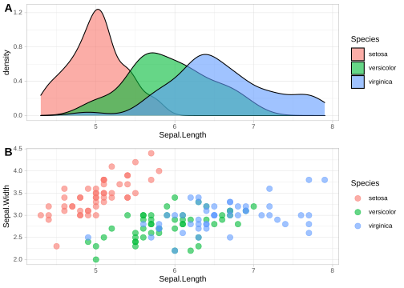
One of the nicer things with ggarrange() is that you can automatically have common legends that are shared between the figures.
ggarrange(p3, p4, labels = c("A", "B"), nrow = 2, common.legend = TRUE, legend = "right")plot
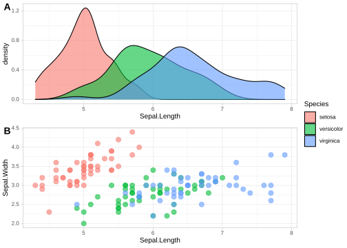
6.2 Mixing text and table with Figures
You can include tables and even normal texts to any figure using ggtexttable() and ggparagraph(). Let us look into adding a table that we saw in the previous exercise with the gene counts dataset.
gc_table <- gc_long %>%
group_by(Time) %>%
summarise(mean=mean(log10(count +1)),se=se(log10(count +1)))
tab1 <- ggtexttable(gc_table, rows = NULL,
theme = ttheme("mOrange"))
gc_text <- paste("In the experiment, RNA was extracted at four time points:",
"before the gefinitib treatment (t=0), and two, six and twenty-four hours",
"after treatment (t=2, t=6, t=24, respectively).", sep = " ")
tex1 <- ggparagraph(text = gc_text, face = "italic", size = 11, color = "black") Note Here, for the text part, paste() has been used just to make it a bit easier to show here in the code. It could be used without the paste() command as well.
ggarrange(ggarrange(p1, p2, nrow = 2, labels = c("A", "B"), common.legend = TRUE, legend = "top"),
ggarrange(tab1, tex1, nrow = 2),
ncol = 2,
widths = c(2, 1))plot

6.3 Multiple-page
With ggarrange() it is also possible to make multiple-page plots. If you are for example making a report of many different figures this can come quite handy. Then you can use ggexport() to export these figures in a multi-page pdf.
multi.page <- ggarrange(p1, p2, p3, p4,
nrow = 1, ncol = 1)
ggexport(multi.page, filename = "multi.page.ggplot2.pdf") Note From this multi.page R object (which is of class list) , you can get the indivdual plots by multi.page[[1]], multi.page[[2]] and so on.
7 Adding images to plots
Let us you have a microscopic image in jpeg or png that you want to add to a normal ggplot plot that you have made from the data.
Let’s take for example the RBC cluster from a SEM that is in data/Blood_Cells_Image.jpeg:

Let us take the following plot that you want to add the image to:
x <- 1:10
y <- x*abs(rnorm(10))
p1 <- ggplot(data.frame(x,y), mapping=aes(x=x,y=y)) + geom_point() + geom_smooth() + ggtitle("The Title") + theme(title=element_text(size=14, hjust=0.5), axis.title=element_text(size=10), axis.text = element_text(size=6))
p1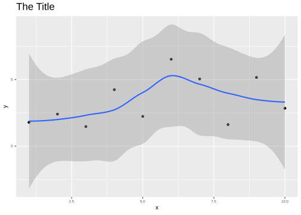
For this first you need to convert the image into a grid object (grob). For this we need a couple of packages grid and jpeg to be able to convert the image into a grid object! We will use the functions readJPEG and rasterGrob from these packages.
library(grid)
library(jpeg)
cells_jpg=readJPEG("data/Blood_Cells_Image.jpeg")
p2 <- rasterGrob(cells_jpg)Now, we can use the grid.arrange() function to plot the grob objects and the ggplot objects.
library(gridExtra)
grid.arrange(p1,p2,nrow=1)plot

We can also use the annotation_custom to place the image in a particular position of the plot!
p3 <- p1 + annotation_custom(rasterGrob(cells_jpg, width = 0.2),
ymin = 10)
p3plot
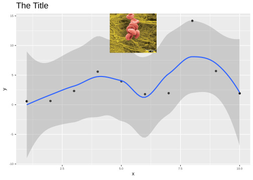
8 Exercise II
Task For the exercise in this session, let us look into way of using the tools available for combining plots to make one plot that could be very comprehensive. Try to code the figure below:
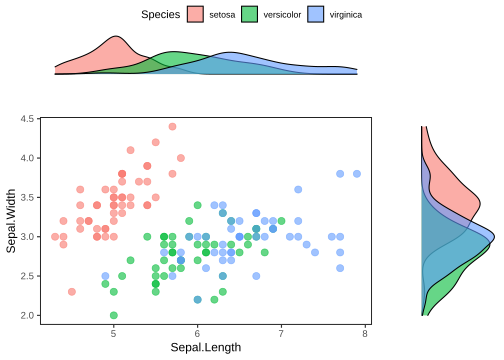
Tip: 1 Within ggarrange(), it is possible to adjust the dimension of each plot with widths and heights options.
Tip: 2 You can plot an empty plot with NULL.
9 PCA
Let us first make a PCA object. For this, we will use the VST data, because it makes sense to use the normalized data for building the PCA. To run PCA, we use the R function prcomp(). It takes in a matrix where samples are rows and variables are columns. Therefore, we transpose our count matrix using the function t(). If we do not transpose, then PCA is run on the genes rather than the samples.
gc_vst <- read.table("data/counts_vst.txt", header = T, row.names = 1, sep = "\t")
vst_pca <- prcomp(t(gc_vst))After you computer the PCA, if you type the object vst_pca$ and press TAB, you will notice that this R object has multiple vecors and data.frames within it. Some of the important ones are
sdev:the standard deviations of the principal componentsx:the coordinates of the samples (observations) on the principal components.rotation:the matrix of variable loadings (columns are eigenvectors).
Note There are quite a few functions in R from different packages that can run PCA. So, one should look into the structure of the PCA object and import it into ggplot accordingly!
9.1 Variance of components (Scree plot)
First, let us look into plotting the variance explained by the top PCs.
frac_var <- function(x) x^2/sum(x^2)
library(scales)
vst_pca$sdev %>%
as_tibble() %>%
frac_var() %>%
mutate(Comp = colnames(vst_pca$x)) %>%
slice(1:9) %>%
ggplot(aes(x=Comp, y = value)) +
geom_bar(stat = "identity", fill = "#4DC5F9") +
geom_hline(yintercept = 0.03, linetype=2) +
xlab("Principal Components") +
scale_y_continuous(name = "Variance Explained", breaks = seq(0,0.8,0.1), labels = percent_format(accuracy = 5L)) +
theme_classic(base_size = 14)plot
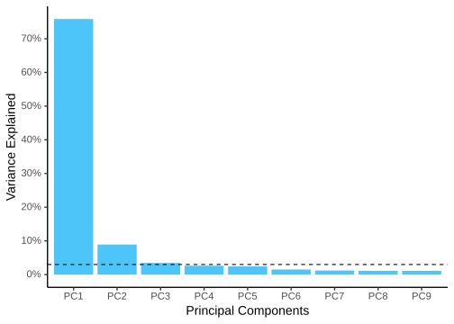
9.2 PCA plot
So, looks like the first two components explain almost 85% of the data. Now, let us look into building a plot out of these components. From the above object, to get the scatter plot for the samples, we need to look into vst_pca$x. Then, we combine this data (as shown below) with the metadata to use different aesthetics and colors on the plot.
vst_pca$xoutput
## PC1 PC2 PC3 PC4 PC5 PC6
## Sample_1 -34.641623 -13.435531 6.486032 -0.2742477 -6.406502 5.6703279
## Sample_2 -35.431333 -13.277983 5.171377 -0.3540945 -3.953216 6.9974341
## Sample_3 -35.938795 -14.544994 2.885351 -11.3414829 5.950082 -10.8497916
## Sample_4 -20.672358 3.962013 -1.414301 10.4819194 -0.195882 -2.8003847
## Sample_5 -21.155503 1.390981 -6.644132 7.4002617 6.505502 0.9771040
## Sample_6 -22.662075 1.115504 -9.801356 6.3107519 7.431833 0.6592987
## Sample_7 1.862762 24.449057 12.865650 -4.4029501 5.822040 4.1873901
## Sample_8 -5.909698 13.992629 -14.775686 -10.9789567 -8.967097 2.2612207
## Sample_9 -3.233544 17.321871 5.196746 2.5142966 -6.983077 -7.2580550
## Sample_10 60.630406 -5.930071 6.993097 5.7393184 -4.254238 -2.6905179
## Sample_11 56.669696 -10.638879 -5.860598 0.4646609 -5.216763 -1.3748865
## Sample_12 60.482067 -4.404596 -1.102179 -5.5594769 10.267317 4.2208603
## PC7 PC8 PC9 PC10 PC11 PC12
## Sample_1 -7.6896364 7.5508580 -1.1936551 -0.2382806 -0.7901002 6.418477e-15
## Sample_2 5.8962070 -9.0662471 -1.0449651 0.2284545 1.3982703 1.526557e-15
## Sample_3 1.4353811 0.7461021 1.4769949 0.2114041 -0.5247079 4.045375e-15
## Sample_4 1.2992058 2.3863551 6.1089574 -0.1510797 9.1851796 3.588969e-14
## Sample_5 -2.7487548 -2.7353990 4.5686381 -6.6024251 -6.9911571 5.848273e-14
## Sample_6 2.1391551 2.3567136 -7.7925047 6.9400619 -1.3499685 4.436035e-14
## Sample_7 5.2166866 4.0805978 0.2292610 -1.4574679 -1.2200771 4.266032e-14
## Sample_8 -0.1684735 -0.1448735 3.9822133 2.5610601 -0.5182664 5.483808e-14
## Sample_9 -5.4663572 -5.2056738 -6.4295279 -1.6062665 0.5133496 4.941880e-14
## Sample_10 0.8277618 -0.5767198 4.9156730 6.8596253 -4.8748004 4.991840e-14
## Sample_11 5.8886122 3.9566331 -4.4374522 -6.9835771 0.4457707 1.114872e-13
## Sample_12 -6.6297877 -3.3483466 -0.3836326 0.2384911 4.7265074 9.376180e-14And, if you check the class() of this object, you will realize that this is a matrix. To be able to comfortably use tidyverse on this object, we must first convert this to a data.frame.
vst_pca_all <- vst_pca$x %>%
as.data.frame() %>%
rownames_to_column(var = "Sample_ID") %>%
full_join(md, by = "Sample_ID")
# Just to keep the order the right way.
vst_pca_all$Sample_Name <- factor(vst_pca_all$Sample_Name, levels = c("t0_A","t0_B","t0_C","t2_A","t2_B","t2_C","t6_A","t6_B","t6_C","t24_A","t24_B","t24_C"))
vst_pca_all$Time <- factor(vst_pca_all$Time, levels = c("t0","t2","t6","t24"))
vst_pca_all$Replicate <- factor(vst_pca_all$Replicate, levels = c("A","B","C"))
ggplot(vst_pca_all, aes(x=PC1, y=PC2, color = Time)) +
geom_point(size = 3, aes(shape = Replicate)) +
geom_vline(xintercept = 0, linetype=2) +
geom_hline(yintercept = 0, linetype=2) +
theme_bw() +
theme(panel.grid.major = element_blank(),
panel.grid.minor = element_blank()) plot
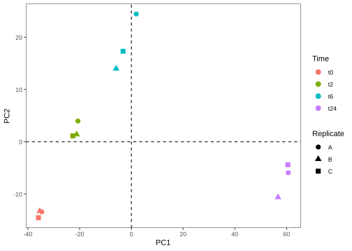
9.3 Loading plot
Now, let us say you want to plot the four genes that contribute the most to the four directions in the PCA plot. We could obtain them by looking at the vst_pca$rotation matrix. We could get those genes and their respective coordinates as follows.
genes.selected=vst_pca$rotation[c(which.max(vst_pca$rotation[,"PC1"]), which.min(vst_pca$rotation[,"PC1"]), which.max(vst_pca$rotation[,"PC2"]), which.min(vst_pca$rotation[,"PC2"])),c("PC1","PC2")]
genes.selected <- genes.selected %>%
as.data.frame() %>%
rownames_to_column(var = "Gene_ID")
genes.selectedoutput
## Gene_ID PC1 PC2
## 1 ENSG00000204941 0.05737805 -0.02981714
## 2 ENSG00000175592 -0.04640560 -0.03986039
## 3 ENSG00000156804 0.01143268 0.03864008
## 4 ENSG00000120738 0.01010573 -0.05681563A loading plot shows how strongly each variable (gene) influences a principal component. As an example, we could plot the four genes we selected.
ggplot(genes.selected, aes(x=PC1, y=PC2)) +
geom_point() +
geom_segment(aes(xend=PC1, yend=PC2), x=0, y=0, color="Grey") +
geom_label(aes(x=PC1, y=PC2, label=Gene_ID), size=2, vjust="outward") +
theme_bw() +
theme(panel.grid.major = element_blank(), panel.grid.minor = element_blank()) plot
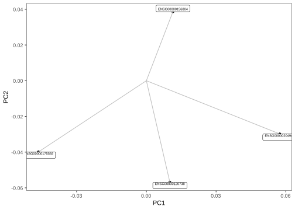
10 PCA bi-plot
By merging the PCA plot with the loadings plot one can create a so-called PCA bi-plot.
scale=500
ggplot(data=vst_pca_all, mapping=aes(x=PC1, y=PC2)) +
geom_point(size = 3, aes(shape = Replicate, color = Time)) +
geom_vline(xintercept = 0, linetype=2) +
geom_hline(yintercept = 0, linetype=2) +
geom_segment(data=genes.selected, mapping=aes(xend=scale*PC1,yend=scale*PC2), x=0, y=0, arrow=arrow(), color="grey") +
geom_label(data=genes.selected, mapping=aes(x=scale*PC1,y=scale*PC2, label=Gene_ID), size=2, hjust="outward", vjust="outward") +
theme_bw() +
theme(panel.grid.major = element_blank(), panel.grid.minor = element_blank())plot
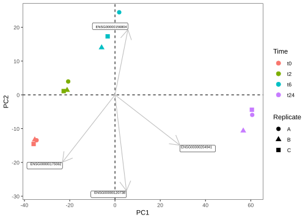
Note Similarly, let us say, you have environmental variables (continous variables like pH and so on) from the same samples and you would like to see how they would fit this bi-plot. One can use envfit() function from the vegan package, this function would return both the p-value and the coordinates of each of the variables in your environmental matrix. Then you could subset the significant variables and plot them in the same way as above.
11 Exercise III
Now, as I have mentioned earlier, building a plot similar to PCA really depends on how the object looks like. Now, let us try to make a MDS or PCoA plot from the same data as we have used. Here is how you get the MDS object in R.
gc_dist <- dist(t(gc_vst))
gc_mds <- cmdscale(gc_dist,eig=TRUE, k=2) Task Now, try to replicate the example MDS plot below if you have enough time.
plot
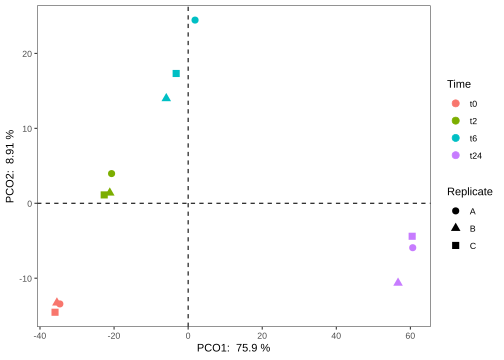
Hint The mds object gc_mds has “eigenvalues”. You can calculate the variance by Variance <- Eigenvalues / sum(Eigenvalues)
12 Session info
sessionInfo()## R version 4.1.3 (2022-03-10)
## Platform: x86_64-pc-linux-gnu (64-bit)
## Running under: Ubuntu 18.04.6 LTS
##
## Matrix products: default
## BLAS: /usr/lib/x86_64-linux-gnu/openblas/libblas.so.3
## LAPACK: /usr/lib/x86_64-linux-gnu/libopenblasp-r0.2.20.so
##
## locale:
## [1] LC_CTYPE=C.UTF-8 LC_NUMERIC=C LC_TIME=C.UTF-8
## [4] LC_COLLATE=C.UTF-8 LC_MONETARY=C.UTF-8 LC_MESSAGES=C.UTF-8
## [7] LC_PAPER=C.UTF-8 LC_NAME=C LC_ADDRESS=C
## [10] LC_TELEPHONE=C LC_MEASUREMENT=C.UTF-8 LC_IDENTIFICATION=C
##
## attached base packages:
## [1] grid stats graphics grDevices utils datasets methods
## [8] base
##
## other attached packages:
## [1] gridExtra_2.3 jpeg_0.1-9 ggpubr_0.4.0
## [4] cowplot_1.1.1 ggthemes_4.2.4 scales_1.2.1
## [7] forcats_0.5.2 stringr_1.4.1 purrr_0.3.5
## [10] readr_2.1.3 tidyr_1.2.1 tibble_3.1.8
## [13] tidyverse_1.3.2 reshape2_1.4.4 ggplot2_3.3.6
## [16] formattable_0.2.1 kableExtra_1.3.4 dplyr_1.0.10
## [19] lubridate_1.8.0 leaflet_2.1.1 yaml_2.3.5
## [22] fontawesome_0.3.0.9000 captioner_2.2.3 bookdown_0.29
## [25] knitr_1.40
##
## loaded via a namespace (and not attached):
## [1] nlme_3.1-155 fs_1.5.2 webshot_0.5.4
## [4] httr_1.4.4 tools_4.1.3 backports_1.4.1
## [7] bslib_0.4.0 utf8_1.2.2 R6_2.5.1
## [10] DBI_1.1.3 mgcv_1.8-39 colorspace_2.0-3
## [13] withr_2.5.0 tidyselect_1.2.0 compiler_4.1.3
## [16] cli_3.4.1 rvest_1.0.3 xml2_1.3.3
## [19] labeling_0.4.2 sass_0.4.2 systemfonts_1.0.4
## [22] digest_0.6.29 rmarkdown_2.17 svglite_2.1.0
## [25] pkgconfig_2.0.3 htmltools_0.5.3 dbplyr_2.2.1
## [28] fastmap_1.1.0 highr_0.9 htmlwidgets_1.5.4
## [31] rlang_1.0.6 readxl_1.4.1 rstudioapi_0.14
## [34] jquerylib_0.1.4 generics_0.1.3 farver_2.1.1
## [37] jsonlite_1.8.2 crosstalk_1.2.0 car_3.1-0
## [40] googlesheets4_1.0.1 magrittr_2.0.3 Matrix_1.5-1
## [43] Rcpp_1.0.9 munsell_0.5.0 fansi_1.0.3
## [46] abind_1.4-5 lifecycle_1.0.3 stringi_1.7.8
## [49] carData_3.0-5 plyr_1.8.7 crayon_1.5.2
## [52] lattice_0.20-45 haven_2.5.1 splines_4.1.3
## [55] hms_1.1.2 pillar_1.8.1 ggsignif_0.6.3
## [58] reprex_2.0.2 glue_1.6.2 evaluate_0.17
## [61] modelr_0.1.9 vctrs_0.4.2 tzdb_0.3.0
## [64] cellranger_1.1.0 gtable_0.3.1 assertthat_0.2.1
## [67] cachem_1.0.6 xfun_0.33 broom_1.0.1
## [70] rstatix_0.7.0 googledrive_2.0.0 viridisLite_0.4.1
## [73] gargle_1.2.1 ellipsis_0.3.2